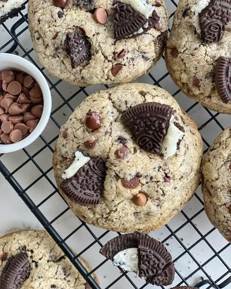

Oreo čokoladni cookies

Moja beleška
SačuvanoSastojci
- Recept sledi
Priprema
Brašno, sodu bikerbonu, mrvicu soli i oreo keks sjediniti i ostaviti sa strane. U dubljoj posudi umutiti omekšali puter sa šećerima, to neka traje oko 2 - 3 minuta, pa onda dodajte aromu vanile i jaja. Nastavite mućenje do lepe kremaste smese. Na kraju tome dodajete suve sastojke, možete i postepeno, dok se lepo ne umeša. Smesa je dosta puterasta i biće lagana za rukovanje. Dok rasklanjate posudje neka ona odstoji u frizederu (bukvalno 15ak minuta je dovoljno) a potom formirajte kuglice. Ja sam želela kukize jednake veličine, pa sam smesu podelila na 15 jednakih loptica i dobila 15 🍪☺️ Napravite lep razmak izmedju loptica, pa tako neka bude šest u jednoj turi kako se ne bi prilikom pečenja slepilo jedan za drugi. Na 180C u zagrejanoj rerni pecite nekih 14 minuta. Po površini će biti meki, ali dno je kolačića je zlaćkaste boje i to je dovoljno jer se oni prilikom hladjenja stežu i tako će ostati onako čokoladno sočni a ne presušeni. Kada ih izvadite iz šporeta uvek možete dodati po koji komadić orea ili kockicu čokolade preko za još sladji ukus ☺️ Uživajte u vikendu pred nama, pa i ako bude kišan, uz 🍪, kaficu i ćebence ☺️ Lep vikend vam želim 💓
Originalni opis sa Instagrama
Oreo čokoladni cookies 🍪 Danas opet tmurno, kišno.. 😔 A ono što mi najviše smeta jeste što takvi dani guše količinu dnevne svetlosti u kući i što onda odlažem neke lepe pripreme.. Food blogeri će najbolje razumeti 😅 Sreća pa sam juče iskoristila ono malo lepih zraka i ispekla vam neke mnogo lepe keksiće 🥰🥰🥰 Ovog puta u kombinaciji crne seckane čokolade i oreo keksa 😍 Čokoladan, sladak, pomalo hrskav, ma baš njami keksić 🍪 Recept sledi: •350 gr mekog belog brašna •kašičica sode bikarbone •1/2 kašičice soli •50gr mlevenog orea •50-60 gr grubo drobljenog orea •220 gr putera •150 gr braon šećera •50 gr belog šećera •1 kašičica arome vanile •1 jaje + 1 žumance •200 gr čokoladnih kapljica ili sitnije seckane crne čokolade Brašno, sodu bikerbonu, mrvicu soli i oreo keks sjediniti i ostaviti sa strane. U dubljoj posudi umutiti omekšali puter sa šećerima, to neka traje oko 2 - 3 minuta, pa onda dodajte aromu vanile i jaja. Nastavite mućenje do lepe kremaste smese. Na kraju tome dodajete suve sastojke, možete i postepeno, dok se lepo ne umeša. Smesa je dosta puterasta i biće lagana za rukovanje. Dok rasklanjate posudje neka ona odstoji u frizederu (bukvalno 15ak minuta je dovoljno) a potom formirajte kuglice. Ja sam želela kukize jednake veličine, pa sam smesu podelila na 15 jednakih loptica i dobila 15 🍪☺️ Napravite lep razmak izmedju loptica, pa tako neka bude šest u jednoj turi kako se ne bi prilikom pečenja slepilo jedan za drugi. Na 180C u zagrejanoj rerni pecite nekih 14 minuta. Po površini će biti meki, ali dno je kolačića je zlaćkaste boje i to je dovoljno jer se oni prilikom hladjenja stežu i tako će ostati onako čokoladno sočni a ne presušeni. Kada ih izvadite iz šporeta uvek možete dodati po koji komadić orea ili kockicu čokolade preko za još sladji ukus ☺️ Uživajte u vikendu pred nama, pa i ako bude kišan, uz 🍪, kaficu i ćebence ☺️ Lep vikend vam želim 💓 • • • #oreochocolatechipcookies #oreocookies #oreocookie #cookiesofinstagram #cookieoftheday #cookiesrecipe #keksici #domacikeksici #oreokeks #slatkirecepti #idejezadezert #slatkisi